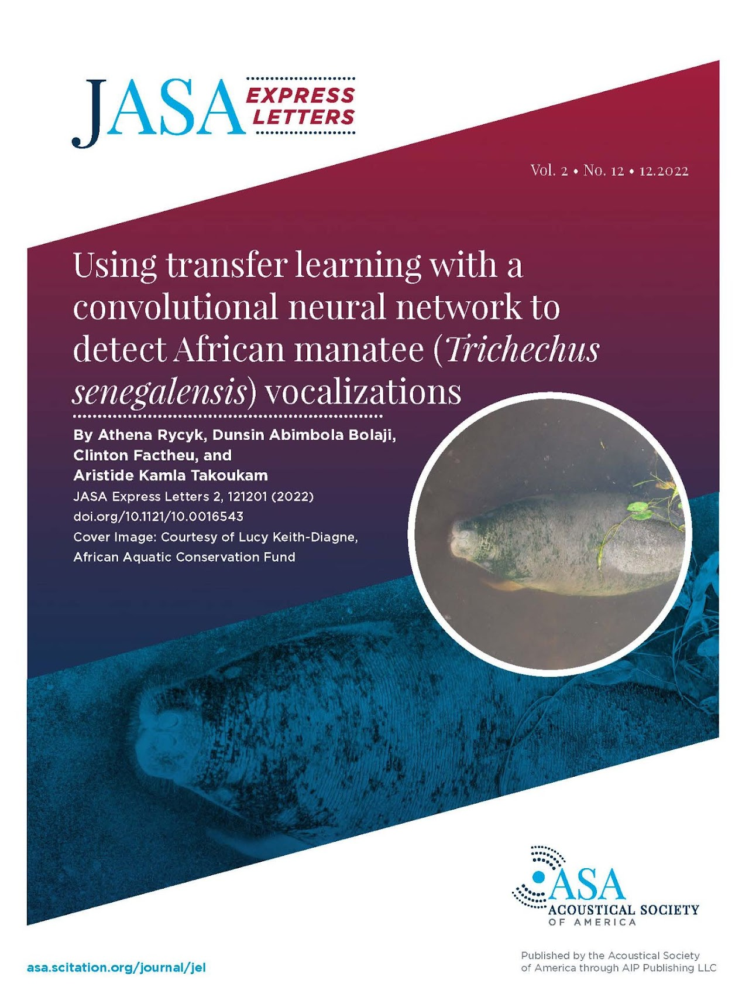

Athena Rycyk, Ph.D.
Marine bioacoustician, behavioral ecologist, and conservation scientist. My research centers on how marine mammals perceive and respond to their acoustic environments, with a focus on manatees, passive acoustic monitoring, and machine learning for species detection.

Passive Acoustic Monitoring
We have developed PAM protocols for Florida manatees including abundance estimation via acoustic cue rates. Current work includes detection of manatee broadband clicks and chewing sounds at seagrass restoration sites.

Sarasota Bay Listening Network
The Sarasota Bay Listening Network records the full underwater soundscape using solar-powered stations, capturing dolphin calls, manatee vocalizations, fish choruses, and vessel noise.

Machine Learning for Detection
We design and train convolutional neural networks using transfer learning to automate detection of marine mammal vocalizations across large, multi-location acoustic datasets.

African Manatee Bioacoustics
In collaboration with researchers in Cameroon, Nigeria, and Senegal, we produced the first characterization of African manatee (Trichechus senegalensis) vocalizations and the first CNN-based automated detector for this species.

Manatee-Boat Collisions
A majority (53%) of adult manatee mortality results from boat collisions. We study how manatees detect approaching vessels, how background noise complicates that detection, and how cognitive frameworks explain why avoidance fails even when boats are audible.

arycyk@ncf.edu · (941) 487-4937
Caples Hall 203, New College of Florida
5800 Bay Shore Rd., Sarasota, FL 34243